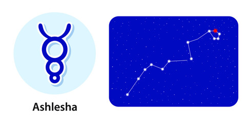

<
1. Pada 1st: The first pada of the Ashlesha Nakshatra comes in the Sagittarius Navamsa and is ruled by Jupiter. The natives born in this pada are caring, emotional and tend to acquire wealth in life from multiple means. They also do charity.
2. Pada 2nd: The second pada of the Ashlesha Nakshatra comes in the Capricorn Navamsa and is ruled by Saturn. The natives born in this pada are cunning and clever. These people don't shy away from using you for their own benefit.
3. Pada 3rd: The third pada of the Ashlesha Nakshatra comes in the Aquarius Navamsa and is ruled by Saturn. The people born in this pada are very secretive. These people are also more prone to skin diseases than anyone else.
4. Pada 4th: The fourth pada of the Ashlesha Nakshatra comes in the Pisces Navamsa and is ruled by Jupiter. The people born in the pada own the responsibility for anything wrong. They get a lot of wealth and happiness from their mother.
“the embrace”δ, ε, η, ρ, and σ Hydrae
Lord: Budh (Mercury)
Symbol: Serpent
Deity : Sarpas or Nagas, deified snakes
Stone: Emerald is your lucky stone.
Lucky numbers : 2 and 5
Lucky days: Monday, Thursday and Saturdays
If a baby born in this nakshatram give her or him a name with starting letter “D”.
These persons should not live in South facing houses.
Persons born in Aslesha nakshatram will have good taarabalam with following nakshatrams:
Magha, Uttara, Chitta, Visakha, Anuradha, Moola, Uttarashada, Dhanishta, Purvabhadra, Uttarabhadra, Aswini, Kritika, Mrigasira,Punarvasu, Pushyami
Indian zodiac: 16°40′ – 30° Karka
Western zodiac 12°40′ – 26° Leo
Ashlesha Nakshatra
Characteristics male
The male born in the Ashlesha Nakshatra is a bit tough to understand. He is very intelligent and cunning and knows how to turn any given situation in his favour. The native is thus a very business-minded individual too. There are two sides of males born in the Ashlesha Nakshatra. The outer side, which shows him off as a compassionate person, and also an inward side where he is a bit selfish. The selfishness, however, works in favour of these people as they use it to focus on themselves and make their life better. The male here believes that if he is doing well in life, only then will he be able to do good for others. Overall, the native born in Ashlesha Nakshatra is helpful and a leader that one can trust.Profession male
When it comes to profession, the male born in the Ashlesha Nakshatra does great at tasks that involve creativity. Streams such as Arts and Commerce are suitable for you even if you are good at Science. Going forward in life, you will certainly want to have something of your own, and your creative instincts will help you in getting it for yourself. Males born in the Ashlesha Nakshatra, however, must tread carefully when it comes to business as there are chances of suffering heavy losses in monetary terms till the age of 35. Thereafter, you and your business, if any, will grow.Compatibility male
The male born in the Ashlesha Nakshatra is a well-mannered partner. He shoulders the responsibilities of each and everyone, even if his parents or wife are capable of handling such responsibilities. However, in the initial phases of any relationship that you get into, your partner or wife will find it tough to understand your feelings and moods. To counter this, spending a lot of time together will help. You will have a long happy married life.Health male
The male born in the Ashlesha Nakshatra needs to adopt an active lifestyle. He, although, doesn't suffer from any major ailments but the tiredness of mind always prevails. Male born in the Ashlesha Nakshatra need to be careful of symptoms that could lead to jaundice, digestive problems, and joint pains in the legs and knees.Characteristics female
The female born in the Ashlesha Nakshatra is very caring but lacks self-control. The latter can impact or delay her pace when it comes to achieving goals in life. However, if you develop the ability to not get distracted by outer forces, you will get success in life faster than anyone else. Moreover, the female born in Ashlesha Nakshatra is of a shy nature and thus may not mingle with anyone and everyone. People may think this is an attitude problem but the lady cares less. The female here can also be very argumentative and doesn't like to lose a conversation even when she knows she is wrong. This is something that you should work on because if you don't, then you may end up losing people you love.Profession female
The female born in the Ashlesha Nakshatra will be very productive in anything she does. She has a great chance of being a part of the administrative framework. However, if not educated, she will end up starting her own business, which will grow exponentially till the age of 40. The female born in Ashlesha Nakshatra may want to retire early and, thankfully, will have the luxury to do so. The lady, however, shouldn't pay heed to the barbs of others when doing business.Compatibility female
The female born in the Ashlesha Nakshatra turns out to be a very family-oriented person. However, she is not limited to being just that. The compatibility she is able to enjoy with her in-laws and husband depends upon the freedom of choice she gets in her family. The lady may not be as attached to her mother as she would be to her father. Also, owing to her shy nature, it takes time for her to fall for someone.Health female
The female born in the Ashlesha Nakshatra is more active than the male counterpart. However, she is also more prone to coming under the influence of drugs. Also, the females born in Ashlesha Nakshatra must take care of symptoms in the body that can lead to problems such as dropsy, jaundice, indigestion and hysteria. She may even often have nervous breakdowns.Ashlesha Nakshatra Padas
1. Pada 1st: The first pada of the Ashlesha Nakshatra comes in the Sagittarius Navamsa and is ruled by Jupiter. The natives born in this pada are caring, emotional and tend to acquire wealth in life from multiple means. They also do charity.
2. Pada 2nd: The second pada of the Ashlesha Nakshatra comes in the Capricorn Navamsa and is ruled by Saturn. The natives born in this pada are cunning and clever. These people don't shy away from using you for their own benefit.
3. Pada 3rd: The third pada of the Ashlesha Nakshatra comes in the Aquarius Navamsa and is ruled by Saturn. The people born in this pada are very secretive. These people are also more prone to skin diseases than anyone else.
4. Pada 4th: The fourth pada of the Ashlesha Nakshatra comes in the Pisces Navamsa and is ruled by Jupiter. The people born in the pada own the responsibility for anything wrong. They get a lot of wealth and happiness from their mother.